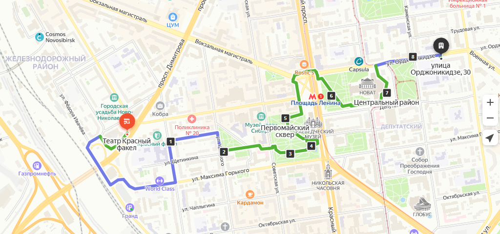

МАУК Парк культуры и отдыха Заельцовский
Заельцовский парк — один из старейших и живописных парков Новосибирска, излюбленное место для отдыха, которое называют «зеленой жемчужиной».
Общая площадь парка — 35 гектаров.
Когда-то парк был обычным бором — необустроенным, но большим и светлым, и очень приятным для прогулок. В 1930 году власти Новосибирска решили облагородить этот зеленый участок и сделать его доступным и привлекательным для отдыха горожан. По проекту Заельцовский загородный парк должен был включить: купальни, дачи, театр и спортивные площадки. Благоустройство началось весной 1931-го, и уже в июне следующего года парк был торжественно открыт. По территории были проложены дорожки, появились аттракционы, детский городок, постепенно облагородили прибрежную зону.
Сегодня Заельцовский парк — место для всей семьи. Здесь регулярно проводятся фестивали (гастрономический, барбекю), праздники (Масленица, День Победы, День защиты детей) и другие мероприятия. Подробную афишу с датами и описанием всех мероприятий можно посмотреть в официальной группе Заельцовского парка.
Уникальность парка и залог его популярности заключается в сочетании близости к центру большого города с чистотой и живописностью этого места. Благодаря большой площади, здесь вы можете как насладиться прогулками, чистым воздухом, тишиной и уединением, так и при желании найти себе развлечение или активность по вкусу.
Маршрут
Заельцовский парк – самое популярное место в Новосибирске. Здесь обустроены тропинки, которые подойдут для бега, пеших и велосипедных прогулок. Маршрут проходит по различным участкам парка, окруженный красивым видом. Этот маршрут отлично подойдет для новичков. Опытным спортсменам рекомендуем увеличить уровень сложности, добавьте пару кругов или пробегите дополнительные участки парка. Наш маршрут начинается с оздоровительного комплекса «Локомотив» . На территории два асфальтовых круга на 1 и 2 км. Продолжая дальше по прогулочной алее, бегите на дополнительный участок.
Официальная группа парка
Новосибирский академический молодежный театр «Глобус» — крупнейший в Сибири центр эстетического и духовного воспитания детей и молодежи, открытый всем направлениям творческой деятельности. Созданный в 1930 году по инициативе основателя детского театрального движения в стране Александра Брянцева, «Глобус» продолжает его лучшие традиции и ежегодно выходит на новые пути развития. История театра, начинавшего свой богатый творческий путь в далеком 1930-м году в качестве Краевого Западно-Сибирского театра юного зрителя, — это история практически каждого жителя Новосибирска и Новосибирской области. Театр прошел все вехи тюзовского движения XX века, войдя в новое тысячелетие «театром для всех поколений».
В 1993 году на основе общегородского конкурса тюз получил новое имя — Новосибирский молодежный театр «Глобус». В 1999 году театру присвоено почетное звание «академический».
В репертуаре «Глобуса» — спектакли для любой зрительской аудитории. Это обусловлено творческой моделью театра — показать на одной сцене все художественные стили, школы и направления. «Глобус» приглашает для сотрудничества не только признанных мастеров сцены, особое внимание он уделяет представителям нового поколения режиссуры. Это позволяет создавать спектакли, отвечающие различным зрительским интересам, таким как комедия, мелодрама, психологическая драма, и в то же время удовлетворять потребность зрителя в интеллектуальном театре. Отбор пьес для составления детского репертуара основан на предпочтении популярных классических сказок, включая направление «бэби-театр».
«Глобус» имеет в своем активе многоплановую профессиональную труппу, находящуюся в хорошем творческом тонусе, способную решать абсолютно все художественные задачи. В настоящее время в труппе театра 46 актеров, 5 из которых имеют звание «Заслуженный артист России».
Директор театра — заслуженный работник культуры России Татьяна Людмилина.
Ежегодно «Глобус» выпускает семь-восемь премьер. Спектакли репертуара идут на большой сцене (зрительный зал на 500 мест) и на малой сцене (зал на 118 мест). Также театр осваивает нестандартные площадки для показов — спецпомещения.
Официальная сайт театра
На месте современной площади Ленина и Первомайского сквера в дореволюционном Ново-Николаевске располагалась Базарная площадь. В 1929 году в этой части Базарной площади, где размещался Сенной торг, было принято решение разбить городской сквер, а место сенной торговли перенесли ближе к ипподрому, на улицу Гоголя.
Службы Горкомхоз начали сносить многочисленные деревянные строения, которые располагались напротив Дома Ленина по Красному проспекту, освобождая место для сквера. В начале это было совершенно голое, пустынное место. Официально название площади — Первомайская — было присвоено решением городского совета 25 июля 1932 года. Поэтому и годом рождения Первомайского сквера считается именно 1932 г.
Сквер был создан по проекту городского архитектора Владимира Михайловича Тейтеля. Ещё в 1929 г. В.М. Тейтель был сослан из Ленинграда в Новосибирск, где через три года он становится главным архитектором Новосибирска.
По сути первым большим проектом Владимира Михайловича стал проект большого сквера рядом с центральной площадью Новосибирска. Сквер располагал диагональными дорожками (расположение которые сохранились до наших времен), фонтан-каскад, большая центральная клумба. Работы по планировке и строительству Первомайского сквера начались ранней весной 1932 года. Официальное открытие Первомайского сквера состоялось в этом же 1932 году, тогда же рядом со строящемся фонтаном появилась не клумба, а мавританский холм (популярные в тот период ландшафтные решения). На одной стороне цветами был высажен портрет Иосифа Сталина, а с другой стороны была цитата вождя - "Кадры решают все".
Жизненный путь В.М. Тейтеля сложился не просто: работал на строительстве «Сибкомбайна» (1930—1932), был главным архитектором Новосибирска (1932—1935).
В 1935 г. был арестован на непродолжительное время, после освобождения работал художником-консультантом Художественной фабрики. Подвергся репрессии повторно в 1938—1940. После освобождения работал в кооперативном товариществе «Художник».
В Новосибирске Владимир Михайлович Тейтель построил здание первого в Новосибирске аэроклуба на ул. Крылова (1934, стилистика конструктивизма), фонтан-каскад в Первомайском сквере (1934), жилые дома «Сибметаллстроя» по ул. Станиславского (1934—1941). Участвовал в реконструкции жилого дома «Сибстройпути» (1935), здания треста «Запсибзолото» (1936; оба случая — декорирование конструктивистских зданий в стилистке «сталинского ампира»), Дома Ленина (1940—1944; перестройка здания 1925 года в стилистике сталинского неоклассицизма). Умер в Новосибирске 19 августа 1945 г.
Маршруты через первомайский сквер

Предлагаем интересный велосипедный маршрут, начиная от Театра Красный факел и проезжая мимо памятников архитектуры до улицы Семьи Шамшиных. Здесь вы сможете тренироваться, насладиться красотой города и погрузиться в его историю.
Наша тренировка начинается с остановки «Театр Красный факел» - это одно из самых знаменитых и культовых мест города. Погружаясь в следующий этап нашего маршрута, мы продолжим движение по проспекту Димитрова: здесь идеальная дорожка для велосипедистов. На маршруте можно встретить жанровую скульптуру «Паровоз ФД 21 – 3000», который был выпущен еще в 1940 году. Этот грузовой паровоз типа 1-5-1 серии ФД21 - настоящий артефакт и символом Советского Союза.
Далее маршрут пролегает по улицам Максима Горького и Революции. В процессе движения мы заметим спортивные площадки во дворах многоэтажных домов.Следующая остановка – улица Усурийского и сквер Водник. Пару минут отдыха в этом очаровательном месте порадует нас пейзажами.
Далее наш путь приведет к Первомайскому скверу: здесь мы будем окружены памятниками архитектуры: «Девушка с веером», «Любовь», «Лесник», «Встреча». Именно в этом месте можно насладиться не только тренировкой, но и культурным наследием города. Рядом с небольшим водоемом можно отдохнуть, насладиться природой и насытиться энергией перед продолжением пути.
Через Деловой дом и улицу Ленина мы предлагаем пересечь Красный проспект и проехать через Театральный сквер. Здесь вы найдете завораживающий театр Новат, который идеально впишется в нашу тематику спорта и фитнеса. Дальше наша тренировка продолжится по улице Каменской, и завершим наш маршрут на остановке «Улица Семьи Шамшиных».
Здесь сможем подвести итоги тренировки, обменяться впечатлениями с командой и похвастаться своими достижениями.
Новосибирский музей железнодорожной техники
Музей железнодорожной техники.
Новосибирский музей железнодорожной техники является крупнейшим музеем данной специализации за Уралом.
Новосибирский музей носящий имя Николая Архиповича Акулинина открылся 3 августа 2000 года, рядом со станцией «Сеятель». На его территории выставлены реальные составы и вагоны с середины XIX века и до наших дней. Причем посетители могут осмотреть железнодорожную технику не только снаружи, но и заглянуть в операционный вагон времен Великой Отечественной войны или побывать в императорском купе.
Идея открытия в Новосибирске музея паровозов и железнодорожной техники появилась в 1996 году, когда в окрестностях города на экспериментальном кольце скопилось много списанных вагонов и спецтехники.Решение о его открытии было принято начальником Западно-Сибирской железной дороги в 1998 г.
Сбор и реставрация экспонатов начались в 1998 году, а в 2000 году, ко дню железнодорожника, музей официально открылся для посещения.
Идейным основателем музея является почетный ветеран-железнодорожник Николай Акулинин. Проработав всю жизнь на Западно-Сибирской железной дороге, Николай Архипович Акулинин решил и на пенсии продолжить заниматься любимым делом. Он принимал участие в подборе экспонатов и стал первым директором музея. В момент открытия экспозиция музея включала 63 экспоната — от локомотивов до путевой техники. В настоящее время музейная коллекция насчитывает более 100 экспонатов и ежегодно пополняется новыми.
Музей паровозов, как называют его местные жители, является одной из самых посещаемых достопримечательностей Новосибирска — более 30 тысяч туристов, как россиян, так и иностранцев, ежегодно. На площади в 3 000 квадратных метров организовано несколько экспозиций:
Паровозы. Старые угольные паровозы, паровозный танк, самый кинематографичный паровоз и модель одного из первых российских паровозов — эта часть музея очаровывает атмосферой XIX века.
Электровозы. В музее представлены электровозы не только советского производства, но и зарубежного. Например, электровоз Шкода из Чехословакии.
Тепловозы. Выставка включает магистральные тепловозы эксплуатировавшиеся на магистралях Западно-Сибирской железной дороги.
Электропоезда. На путях музея располагаются составы пригородных электричек различных годов и моделей выпуска. Наибольший интерес вызывает сохранившийся в целости состав первой скоростной электрички российского производства (прообраз современного Сапсана, курсирующего сегодня на скоростной магистрали между Москвой и Санкт-Петербургом).
Вагоны. Среди экспонатов: вагон для перевозки заключенных, операционная в санитарном поезде, вагон-кухня и старинный вагон московского метро. Особенно впечатляет бронированный вагон царских времен с дубовой мебелью, изящным убранством купе и роскошным рестораном.
Специальная железнодорожная техника. Вагоны для перевозки спирта, снегоуборочная техника для железных дорог, вагон для перевозки жидкого чугуна, смазочно-заправочные станции, моторные платформы — это лишь малая часть представленной техники.
Ретро автомобили. Новую, растущую экспозицию составляют образцы советского автопрома: легковые автомобили, грузовики, вездеходы, военная техника и тракторы. Встречаются и зарубежные модели — например, военный Додж.
Планетарий — является учреждение дополнительного образования детей. Миссия планетария состоит в популяризации и распространении знаний по астрономии.
Планетарий ведет работу по нескольким направлениям:
дополнительное образование детей и подростков
культурно-досуговая деятельность
научно-методическая работа по производству контента для планетариев
Первая обсерватория в Новосибирске появилась еще до революции в реальном училище, где был установлен телескоп немецкой фирмы Цейс. В конце 30-х годов кафедры астрономии появились в СибСТРИНе и затем в НИИГАиКе. Любительская астрономия развивалась усилиями С.С.Войнова, В.И.Кириченко, Л.Л.Сикорука. Был в Новосибирске и планетарий, оборудованный оптическим аппаратом Цейс. В настоящее время он продолжает выполнять учебные задачи в СГГА.
За все годы деятельности любителей астрономии назрел вопрос о строительстве большого планетария и обсерватории в Новосибирске. История создания большого планетария начинается в сентябре 2006 года после проведения первого сибирского астрономического форума (СибАстро). Именно тогда новосибирские любители астрономии обратились к мэру города с идеей строительства астрофизического центра. А уже 12 декабря 2006 года мэр города Новосибирска В.Ф. Городецкий провел первое заседание по этому вопросу. Было определено место – на южном склоне Ключ-Камышенского плато. Проект был разработан архитектором Игорем Поповским, который в 2007 году был отмечен дипломом конкурса «Золотая капитель». Первоначальный проект был разбит на две очереди. В состав первой очереди вошли: Астрофизический центр, парк и башня Фуко. Само здание планетария выполнено двухэтажным. На первом этаже – студия для съемки фильмов, офисные, технические и подсобные помещения. На втором этаже находятся: сердце планетария - звездный зал с 16-метровым куполом, две башни-обсерватории, большой холл, учебные аудитории, кафе-столовая. Для следующей очереди проекта была зарезервирована территория, прилегающая к планетарию с западной стороны. Условное название второй очереди – детский научно-технический музей (детский технопарк).
Возможность дальнейшей реализации проекта появилась в конце 2009 года, когда строительство детско-юношеского астрофизического центра было включено в федеральный план основных мероприятий по подготовке и проведению празднования 50-летия полета в космос Ю.А.Гагарина. В рамках этого плана из федерального бюджета была выделена сумма 200 млн. рублей, из областного - 50 млн. рублей, из городского - 90 млн. рублей. Новосибирский Астрофизический центр возведен в ряду немногочисленных новых сооружений подобного типа, он крупнейший в азиатской части России.
8 февраля 2012 года, в День российской науки, состоялось торжественное открытие Детско-юношеского центра «Планетарий». Российский экипаж Международной космической станции поздравил новосибирцев с открытием центра прямо с орбиты. Поздравления и добрые напутствия прозвучали из уст высоких гостей: мэра города Новосибирска В. Ф. Городецкого, губернатора В. А. Юрченко, представителя президента В. А. Толоконского, космонавта В. П. Савиных. За выдающийся вклад в реализацию проекта были награждены ценными знаками члены рабочей группы по строительству планетария: В. А. Скосырский, Л. Л. Сикорук, Ю. В. Метельский, а также генеральный подрядчик - директор строительной компании "Агросервис" С. П. Григорьев.
20 ноября 2022 года впервые в Детско-юношеском центре «Планетарий» состоялся урок из Космоса, который в прямом эфире для обучающихся ДЮЦ «Планетарий» провела космонавт Анна Юрьевна Кикина, работающая уже 45 суток на Международной космической станции. Анна Юрьевна родилась и выросла в Новосибирске, впереди у нее еще сто суток полета.
В ходе встречи Анна Юрьевна поделилась своими впечатлениями от полета, рассказала, что ее изумило, когда она попала на станцию, с чем можно сравнить чувство невесомости, какие праздники космонавты празднуют, как выглядит Новосибирск из Космоса, чего ей не хватает в полете и поет ли она песню «Земля в иллюминаторе».
Вопросов было много, отведенное время пролетело очень быстро, но Анна Юрьевна успела дать ребятам домашнее задание.
На уроке ребята получили домашнее задание — выполнить рисунок, связанный с идеей занятий в планетарии (на сегодняшний день в планетарии занимается 1300 человек по 32 образовательным программам). По итогу отобранные лучшие работы были доставлены на орбиту, где Анна Кикина сфотографировала их на фоне нашей планеты.
Центральный сибирский ботанический сад СО РАН
Крупнейшее ботаническое научно-исследовательское учреждение на территории Азиатской России – Центральный сибирский ботанический сад СО РАН – был организован в 1946 году по инициативе академика Владимира Леонтьевича Комарова в составе Медико-биологического института (в дальнейшем – Биологический институт) Западно-Сибирского филиала АН СССР.
Научные основы организации Ботанического сада были разработаны заслуженным деятелем науки РСФСР профессором Виктором Владимировичем Ревердатто.
Ботанический сад был организован на территории в Заельцовском районе Новосибирска, которая включала лесопарковую зону и плодовый сад Новосибирского общества мичуринцев площадью 8 га.
Председатель Общества мичуринцев Иван Павлович Питенёв оказывал существенную помощь директору ботанического сада Л.П. Зубкус по планировке и освоению территории.
Решением Президиума Западно-Сибирского филиала АН СССР № 264 от 27.05.1955 г. Ботанический сад был выведен из структуры Биологического института, как самостоятельное научно-исследовательское учреждение с непосредственным подчинением Президиуму Западно-Сибирского филиала. Быстрое развитие Ботанического сада началось после организации в 1957 г. Сибирского отделения Академии наук СССР.
В 1958 году Ботанический сад на правах самостоятельного научного подразделения вошел в состав Сибирского отделения АН СССР под названием Центральный сибирский ботанический сад (ЦСБС) СО АН СССР. В 1961 г. в него были переведены из Биологического института СО АН СССР лаборатории геоботаники и реконструкции растительного покрова, низших растений, Лесная опытная станция. Созданы лаборатории микробиологии, биохимии растений. В этом же году ЦСБС СО АН СССР получил статус научно-исследовательского института первой категории.
День "рождения" ЦСБС СО РАН: 7 марта 1946 года
Посещение Партера и Дендрария Ботанического сада с 9:00 до 21:00.
Посещение экспозиции открытого грунта по расписанию ниже.
Экспозиции закрытого грунта (оранжереи) работают круглый год по расписанию.
Официальная сайт ЦСБС
Новосибирский зоопарк имени Р.А.Шило
НОВОСИБИРСКИЙ ЗООПАРК ИМЕНИ РОСТИСЛАВА АЛЕКСАНДРОВИЧА ШИЛО
Часы работы
- рабочие дни с 08-00 до 23-00 (кассы и контроль до 20-00)
- выходные с 08-00 до 23-00 (кассы и контроль до 20-30)
Новосибирский зоопарк имени Ростислава Александровича Шило — один из крупнейших зоопарков России. Занимает площадь 65 га, в нём содержится около 12 000 особей 790 видов. Более 350 видов занесены в Международную красную книгу. Около 180 видов внесено в Красную книгу России и Региональные Красные Книги. На 110 видов ведутся международные племенные книги.
В Новосибирском зоопарке занимаются разведением кошачьих и куньих, поэтому здесь одна из лучших в мире коллекций представителей этих семейств. Коллектив зоопарка участвует в 77 международных программах по сохранению редких и исчезающих видов животных. Является членом двух международных союзов: EARAZA (Евроазиатская региональная ассоциация зоопарков и аквариумов), WAZA (Международная ассоциация зоопарков и аквариумов); кандидат в члены EAZA (Европейская ассоциация зоопарков и аквариумов). Участвует в международной компьютерной программе ZIMS.
Официальная сайт зоопарка
Нарымский сквер — расположен в Железнодорожном районе г. Новосибирска, в ландшафтном пространстве между улицами Нарымской, 1905 года, Советской и Гоголя. С южной стороны к скверу примыкают здание цирка и территория Вознесенского кафедрального собора.
Сквер был сформирован к 1971г. при строительстве нового здания Цирка. На освобожденной от частных строений прилегающей территории был разбит зеленый островок, который получил свое название от прилегающей Нарымской улицы. Долгое время в 70-80-хх гг. в сентябре месяце здесь проводились праздники урожая, каждый район имел на территории парка свой летний павильон, в которых демонстрировались достижения садоводов. Информация о предстоящих Днях урожая размещалась на страницах газеты «Советская Сибирь». В конце 80-хх годов в сквере стали проводить общественные праздники, в том числе молодёжной газеты «Молодость Сибири». Здесь же состоялись первые фестивали новосибирского рок-клуба на открытом воздухе. В 1990-е годы павильоны сильно обветшали и были снесены. Сквер является излюбленным место отдыха новосибирцев не одного поколения.
В последнее время в Нарымском сквере проводится большая работа по смене старых насаждений и благоустройству территории самого сквера.
В 2022-2023 году мэрия Новосибирска провела конкурс по благоустройству прилегающей территории к скверу со стороны ул. Гоголя. На прилегающем к цирку пространстве было проведено новое зонирование, разбиты современные клумбы и ландшафтные композиции, высажены новые деревья и кустарники, заменены старое покрытие и лестничные спуски. Все работы, проводимые в Нарымском сквере, проводятся после предварительного дендрологического обследования. При проведении работ будут снесены самые старые деревья, проведена формовочная обрезка и пересадке зеленых насаждений. Все работы по обновлению зелёной зоны в самом центре города проводятся силами сотрудников профильных организаций: МАУ «Горзеленхоз» и ботанического сада СО РАН.
Памятники
- Памятник жертвам политических репрессий
- Памятник Святым благоверным князю Петру и княгине Февронии Муромским
- Памятник жертвам радиационных катастроф, аварий и испытаний ядерного оружия
Маршрут через нарымский сквер
Забудьте о скучных тренажерах и погрузитесь в красоту Новосибирска! Пройдите наш тренировочный маршрут через Нарымский сквер, где вы сможете укрепить свою физическую форму и насладиться прекрасными видами города. На пути вам встретятся памятники истории, архитектурные достопримечательности и настоящий дух культуры. Приходите в любое время и получите заряд эмоций и энергии от тренировки на Нарымском сквере. И помните, бег - это не только спорт, но и путь к самосовершенствованию и победе над стрессом. Найдите свой идеальный маршрут и начните побеждать уже сегодня!
Нарымский сквер – одно из самых красивых мест. Первоначальная точка маршрута -Вознесенский собор. Он построен в начале 20 века. Особенно красиво он выглядит вечером. Выйдя на улицу имени Гоголя, не забудьте проложить маршрут через Новосибирский цирк. Насладитесь красивыми фасадами зданий, окружающих цирк и ощутите настоящий дух культуры и искусства. Маршрут включает в себя памятники, которые напоминают о важных исторических моментах. Это два памятника, один из них посвящен погибшим в аварии на АЭС чернобыльской катастрофы. Тренируясь на Нарымском сквере, почувствуйте не только физический прогресс, но и настоящие эмоции от города Новосибирска. Нарымский сквер соединяет красоту города и любовь к спорту в одном месте.
Новосибирская государственная филармония
Новосибирская государственная филармония основана 1 января 1937 г. Она является ведущей концертной организацией России, при этом самой крупной в стране.
Ключевым коллективом филармонии является Новосибирский академический симфонический оркестр. Со дня основания в 1956 году до 2007 года оркестром руководил лауреат Государственной премии России, народный артист СССР, профессор Арнольд Кац.
Наряду с Новосибирским академическим симфоническим оркестром в филармонии работают 19 коллективов, предлагающих взрослым и детям классические, джазовые, эстрадные, фольклорные, музыкально-литературные и образовательные концертные программы. В их числе: Филармонический камерный оркестр, «Filarmonica»-квартет, Ансамбль солистов «Новосибирская камерата», Русский академический оркестр, Новосибирская хоровая капелла, Биг-бэнд Владимира Толкачёва, Джаз-оркестр «Сибирский диксиленд», Ансамбль «Маркелловы голоса», Вокальный ансамбль Павла Шаромова, Ансамбль ранней музыки «Insula magica», Эстрадный оркестр, Концертный духовой оркестр, Фольклорный ансамбль «Рождество», Ансамбль медных духовых «Сибирский брасс», Фортепианный дуэт Геннадий Пыстин – Дмитрий Карпов, Дуэт «Resonance», Театральный коллектив «Ангажемент».
Помимо организации концертов своих коллективов филармония занимается гастрольными проектами, а также проводит ряд крупных международных фестивалей: Международный Рождественский фестиваль искусств, Транссибирский Арт-Фестиваль, Sib Jazz Fest, Белый фестиваль и другие.
С начала 2000-х годов выступления филармонических коллективов проходят на сцене Камерного зала филармонии (историческое здание Дом Ленина). В сентябре 2013 года открылся Государственный концертный зал имени Арнольда Каца.
Официальная сайт филармонии